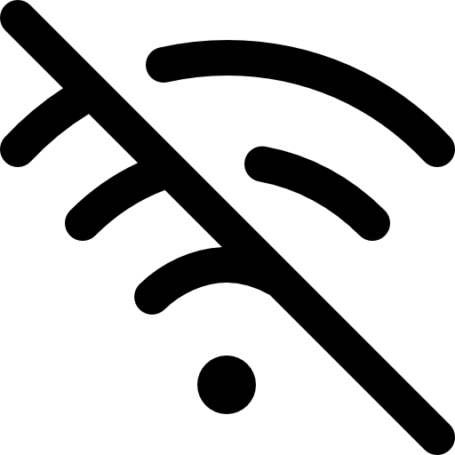
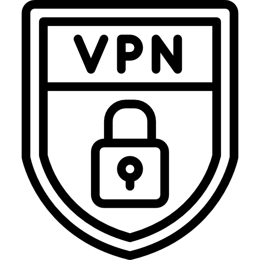

使用公用 Wi-Fi 的零風險清單
快速瀏覽七項重點守則，讓你在咖啡廳、飯店或車站也能安心上網。
拒絕沒有鎖頭的網址
避免登入 http 開頭的網站；尋找瀏覽器上的鎖頭符號與 https 保障，確保資料傳輸已加密。

金融交易等回家再做
公共網路不適合登入銀行或投資平台，敏感資訊容易被攔截，等到可信網路再處理。

選擇有密碼保護的熱點
需登入或輸入密碼的網路通常較安全，也能降低未授權人員同時連線的風險。

暫停線上刷卡
在開放網路購物容易外洩信用卡與個資，先加入購物車，改用個人網路完成交易。

關閉自動連線
避免裝置自動連上陌生熱點；不用網路時記得關閉 Wi-Fi 功能，降低暴露時間。
確認熱點真偽
與店家人員交叉確認 Wi-Fi 名稱，不隨意連上相似名稱或無主網路。

善用 VPN 建立私人通道
VPN 先與服務商建立加密連線，再由其伺服器進入網際網路。駭客看到的是 VPN 的 IP，難以追蹤到你本人，還能過濾惡意網站與釣魚內容，是行動上網最可靠的後盾。
資料來源：大紀元時報